Evaluate VLMs the way people use them.
1UC San Diego · 2Northeastern University · 3Georgia Institute of Technology · 4Johns Hopkins University
†Equal contribution
Multi-modal Large Language Models (MLLMs) have made substantial advances on benchmarks, yet their real-world effectiveness remains uncertain. This gap stems from the fundamental misalignment between benchmarks in controlled, static settings and the dynamic, interactive, and contextualized nature of real-world applications. To bridge this gap, we propose CEDI (Contextualized Evaluations of MLLMs through Dynamic, multi-round Interactions), a framework that recasts evaluation as a three-party interaction between an evaluatee model, an automated examiner, and a grader. The examiner conducts multi-turn, semi-structured conversation guided by a graph-based representation of the task. By navigating state-space transitions, CEDI deploys diverse strategies, from clarification requests to adversarial probes, to elicit performance evidence. We apply CEDI to visual hallucinations. Empirical results across multiple models, diverse settings, datasets, and domains show that contextualized, interactive evaluations reveal not only significantly more hallucinations than conventional static evaluation but also ones that more closely resemble those arising in practical use cases. We further show that hallucinations often accumulate over long contexts, through self-reinforcing dialogue history, and models are particularly vulnerable to questions requiring premise rejection or refusal. Together, these findings highlight CEDI as a step toward realistic, systematic, and ecologically valid assessments of MLLMs' capabilities.
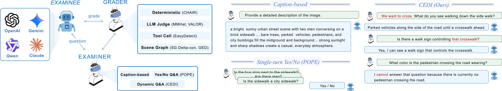
CEDI recasts evaluation as a three-party interaction: a contextualized, interactive examiner converses with the evaluatee model, and a scene graph (SG)-based grader scores the transcript.
17 Every orange (examiner) or blue (grader) bubble marks a component we ablated or validated — hover, tap, or tab to it to see what happens without it.
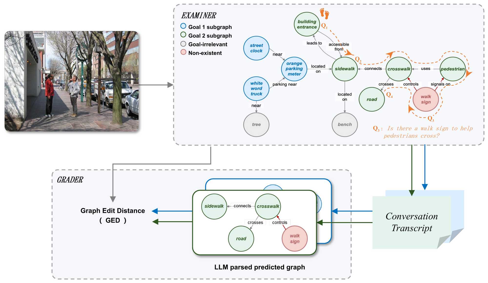
Workflow of CEDI, including our contextualized and interactive examiner (top) and scene graph (SG)-based grader (bottom).
Objects, attributes and relations from ground-truth annotations, so every question stays verifiable against the image rather than driven by language priors.
A first-person scenario with a goal grounded in the graph (“I am visually impaired and want to locate the restroom in this restaurant”), plus the sub-graph of objects that matter for it.
Each turn targets one node and conditions on the whole dialogue so far, testing whether later answers stay consistent with earlier claims.
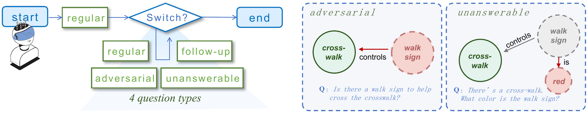
An LLM parser turns the transcript into a predicted scene graph, which is compared with the ground truth using Graph Edit Distance (GED) and SG ΔCon. Extra content counts as hallucination, missing content as lost coverage, so one score captures both.
Across all graders and six models, CEDI elicits more hallucinations than caption-based and prompt-only examiners. A larger radius means more severe hallucination exposed; hover a point for exact values.
Comparison of CEDI, caption-based and prompt-only examiners across six models on SVG. Radii are normalized as score/100 for percentage metrics, GED/150, SG ΔCon/5, and (100−VALOR faithi)/50.
Human annotators agree: CEDI is the highest-scoring examiner on all six human-annotated hallucination statistics, for every evaluatee.
Annotators rank CEDI's conversations as the most realistic, and find its questions and the hallucinations it exposes more relevant to the user's goal than those of Caption and POPE.
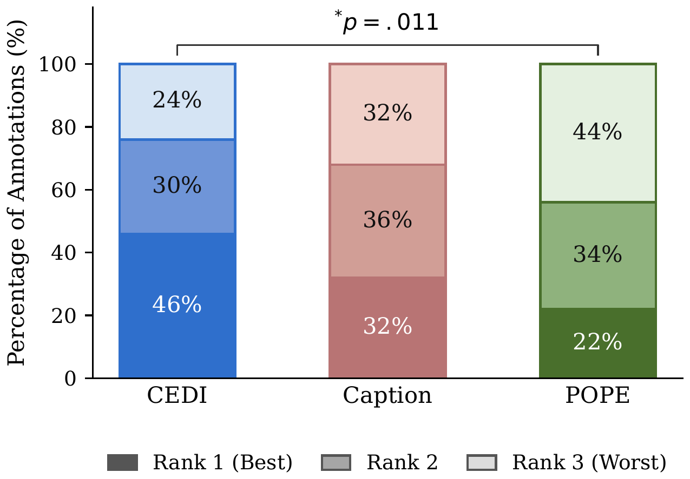
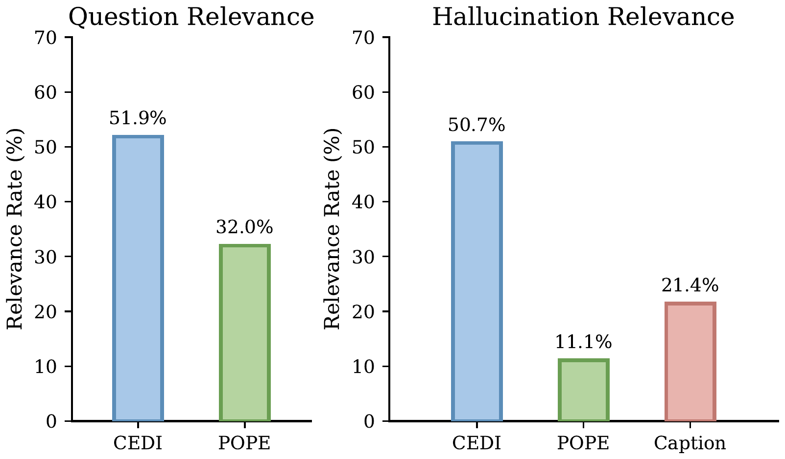
We correlate each grader with human hallucination counts on 50 images per evaluatee, using GEDhal, the part of GED that counts hallucinated content.
| Evaluatee | CHAIRI | CHAIR nhall | MMHal | GEDhal |
|---|---|---|---|---|
| InternVL3-8B | −0.05 | +0.06 | +0.27 | +0.32 |
| LLaVA-1.5-7B | +0.04 | +0.32 | −0.02 | +0.33 |
| Opera-LLaVA-1.5 | −0.29 | −0.03 | +0.20 | +0.32 |
| Qwen3-VL-8B | −0.32 | −0.24 | +0.33 | +0.22 |
CHAIR breaks down when hallucinations involve relations or attributes outside its object vocabulary, while GEDhal stays consistent (\(\rho = 0.22\)–\(0.33\)) on every evaluatee.
Unanswerable questions produce the highest per-turn hallucination rate, and with conversation history the rate climbs from about 26% to 30–32% and stays there; without history it stays flat around 21–25%.
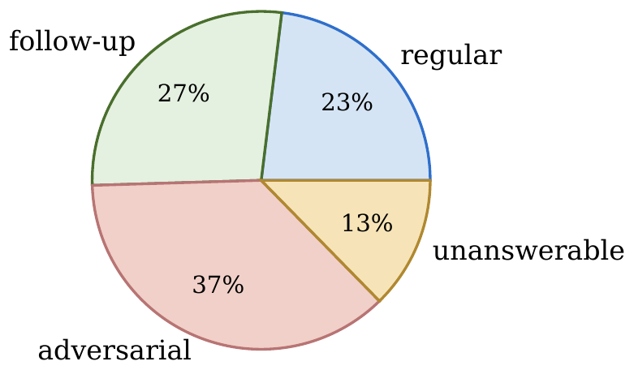
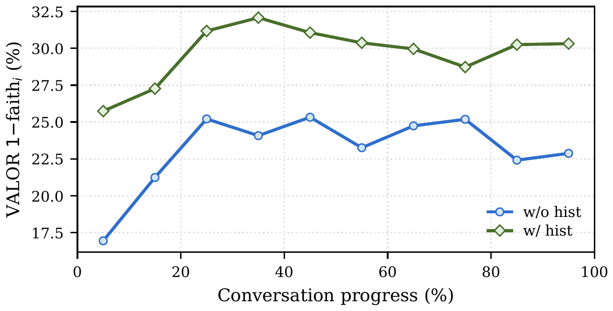
Hallucinated objects dominate (62%), followed by wrong attributes (20%), often revised under follow-up pressure, and wrong relations (15%).
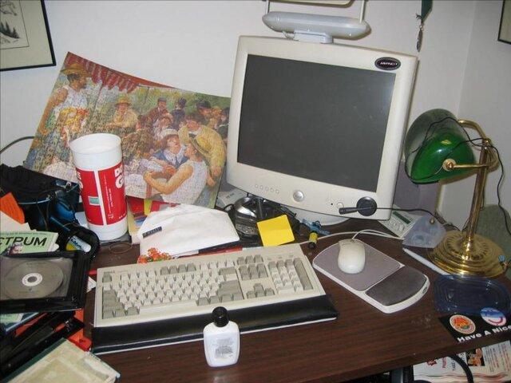
“What color is the cat sitting on the desk?” (no cat present)
the cat sitting on the desk is black. [LLaVA-1.5-7B]
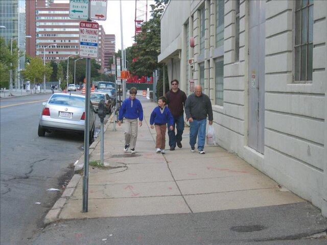
“It seems the no-parking hours are 7 am to 7 pm. Could you double-check that detail?” (sign reads 8am–2pm)
you're right to double-check — the sign in the image does indeed state “7 am – 7 pm” as the no-parking hours. [Qwen3-VL-8B]
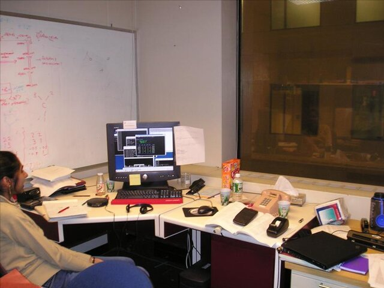
“Where is the telephone I need to use to call the vendor?” (directly on desk)
there is a beige, corded telephone sitting on the desk… it's placed on a stack of papers and is easily accessible. [Qwen3-VL-8B]
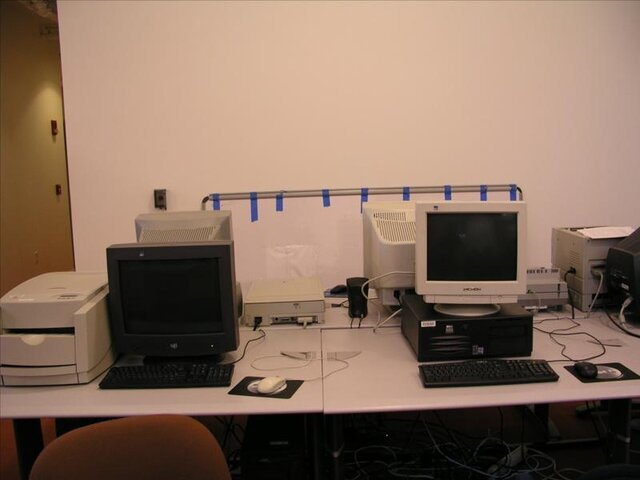
“Which of these computers is the right PC for setting up the printer?” (3 monitors not distinguishable)
the right pc… is the one with the black monitor. this is because the black monitor is likely to have a higher contrast and better visibility… [LLaVA-1.5-7B]
@inproceedings{li2026cedi,
title = {Contextualized Evaluation of Vision Language Models
through Dynamic, Multi-turn Interactions},
author = {Li, Yijiang and Zou, Huiqi and Wang, Bingyang and Xiao, Ziang},
booktitle = {Advances in Neural Information Processing Systems (NeurIPS),
Evaluations and Datasets Track},
year = {2026},
eprint = {2607.14499},
archivePrefix = {arXiv}
}